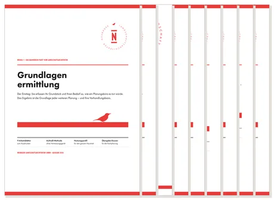

Organizer: Gartenplaner für Selbstversorger
Produktprofil · Marktplatz-Daten 2026-10-09 · Verkaufsseiten-Recherche 2026-10-09 · Kategorien: Home & Garden
- Organizer: Gartenplaner für Selbstversorger ist ein/e E-Book in Home & Garden, vertrieben über den Digistore24-Marktplatz von Anbieter BiotopicaFarm, gelistet seit 2020-02-17.
- Listenpreis $12.49; Digistore24 meldet — Checkout-Konversion, — Stornierungsquote und 25 % Affiliate-Provision.
- Verdienst pro Verkauf (Affiliate): $3.12 (Anbieter-seitige Statistik, keine Prognose).
Interesse an Organizer: Gartenplaner für Selbstversorger? Aktueller Preis, Boni und Garantiebedingungen finden Sie auf der offiziellen Seite des Anbieters:
Offizielle Verkaufsseite ansehen
Affiliate-Link (Werbung) — wir verdienen ggf. eine Provision, ohne Mehrkosten für Sie.
Marktplatz-Daten
| Produkttyp | E-Book |
|---|---|
| Preis | $12.49 (Single payment) |
| Affiliate-Provision | 25 % |
| Garantie/Rückgabe | Laut Verkaufsseite des Anbieters — vor dem Kauf auf der offiziellen Seite prüfen |
| Anbieter | BiotopicaFarm (gelistet seit 2020-02-17) |
| Marktplatz-Statistiken* | Checkout-Konversion — · Stornoquote — · Verdienst/Verkauf $3.12 |
* Anbieter-seitige Statistiken von Digistore24; sie hängen von der Traffic-Qualität ab und sind keine Prognose.
Marktplatz-Beschreibung des Anbieters
Der Gartenplaner für Deine persönliche Selbstversorgung kommt mit einem 40-Seitigen E-Book mit zahlreichen Aufgaben, über 80 Arbeitsblätter, um den Überblick Im Garten zu behalten, plus einem To Do Listen Paket. Der Gartenplaner ist für Hobbygärtner, Familien und sogar für ganze Ökodörfer anwendbar. Mit ihm errechnest Du Deinen jährlichen Bedarf und kannst Dich gezielt auf den Anbau von Obst, Gemü…
Von der Verkaufsseite des Anbieters
Seitentitel: „Der Gartenplaner für Deine persönliche Selbstversorgung"(Download: E-Book+ Arbeitsplaner + To Do Listen Bundle) - Biotopica Farm
Abschnitts-Überschriften
- Der Gartenplaner für Deine persönliche Selbstversorgung
- Jetzt dauerhaft günstig!
- Was genau ist in dem Gartenplaner alles enthalten?
- Selbstversorgung ist eine persönliche Sache:
- Niemand kann Dir abnehmen Deinen jährlichen Bedarf an Obst und Gemüse auszurechnen. Denn Du und Dein Garten sind einzigartig!​
- Der Gartenplaner für Deine persönliche Selbstversorgung
- Häufig gestellte Fragen
- Für wen ist der Gartenplaner gedacht?
- Warum gibt es den Gartenplaner nur als Download Produkt?
- Was kostet der persönliche Gartenplaner und welche Zahlungsarten gibt es?
Einstiegstext
„Der Gartenplaner für Deine persönliche Selbstversorgung" enthält:
-Ein E-Book in A4 Format mit über 40 Seiten und vielen Aufgaben , dass Dich Unterstützt und Dir zur Seite steht um den Gartenplaner optimal zu nutzen
-Mehr als 80 Arbeitsblätter , für den Überblick über Deinen Garten
Falls Du Dich immer noch fragst, ob der persönliche Gartenplaner das Richtige für Dich ist, hier gibt's einen Einblick zu den Aufgaben, die Dich erwarten.
Recherche-Methode: rohes HTML · 1756 Wörter · Qualität: medium · recherchiert am 2026-10-09. Vollständige Recherche-Datei (MD) ↗
Wie Produkte dieser Art geliefert werden
Allgemeiner Hinweis zu diesem Produkttyp (keine anbieterspezifische Anleitung): E-Books auf Digistore24 werden als digitaler Download geliefert (meist PDF/EPUB): direkt nach dem Checkout erhalten Sie einen Downloadlink oder Mitgliederzugang und können auf jedem Gerät lesen. Für die genaue Anwendung von Organizer: Gartenplaner für Selbstversorger sind die offizielle Verkaufsseite und die enthaltenen Materialien maßgeblich.
Gut zu wissen
- Keine Garantie-Formulierung in unserer Recherche gefunden — bestätigen Sie das Rückgabefenster auf der offiziellen Seite, bevor Sie kaufen.
- Marktplatz-Zahlen (Preis, Provision, Konversion, Stornoquote) — Quelle: offizielle Digistore24-Marktplatz-API (Affiliate-Sicht), Stand 2026-10-09. Gegenprüfung: Marktplatz-Suche nach Produkt-ID 308550.
- Verkaufsseiten-Zitate — Quelle: https://www.biotopicafarm.de/der-gartenplaner-fuer-deine-persoenliche-selbstversorgung-download-produkt/index.html, abgerufen 2026-10-09 (Methode: rohes HTML). Verify: offizielle Seite öffnen.
- Garantie / Rückgabe — vom Anbieter festgelegt; vor dem Kauf auf der Verkaufsseite bestätigen.
- Nicht von uns geprüft: Produktqualität, Ergebnisse, Testimonials — kein Praxistest für dieses Listing durchgeführt.
Häufige Fragen zu Organizer: Gartenplaner für Selbstversorger
Antworten aus dem Marktplatz-Snapshot (2026-10-09) und der Verkaufsseiten-Recherche (2026-10-09); Anbieteraussagen sind inline gekennzeichnet.
Was ist Organizer: Gartenplaner für Selbstversorger?
Organizer: Gartenplaner für Selbstversorger ist ein Angebot des Typs „E-Book" im Digistore24-Marktplatz, Anbieter: BiotopicaFarm, gelistet seit 2020-02-17. Eingepflegt unter Haus & Garten. Digistore24 wickelt Checkout, Lieferung und Rückgaben ab.
Wie viel kostet Organizer: Gartenplaner für Selbstversorger?
Der Digistore24-Marktplatz listet es für $12.49 (single payment). Preise legt der Anbieter fest und können sich ändern — der Marktplatz-Eintrag oben zeigt den Schnappschuss; die offizielle Verkaufsseite zeigt den aktuellen Preis.
Gibt es eine Geld-zurück-Garantie für Organizer: Gartenplaner für Selbstversorger?
Unsere Verkaufsseiten-Recherche hat keine explizite Garantie-Formulierung gefunden. Viele Digistore24-Produkte bieten 60 Tage Geld-zurück, aber das legt jeder Anbieter selbst fest — bestätigen Sie es auf der offiziellen Verkaufsseite, bevor Sie kaufen.
Ist Organizer: Gartenplaner für Selbstversorger seriös?
Wir bewerten keine Seriosität — wir veröffentlichen überprüfbare Zahlen: Anbieter BiotopicaFarm (gelistet seit 2020-02-17), Checkout-Konversion —, Stornoquote —, Affiliate-Verdienst/Verkauf $3.12 (alles Anbieter-seitige Marktplatz-Statistiken). Lesen Sie unsere 6-Punkte-Bewertungsmethode und entscheiden Sie anhand der Zahlen — oder diskutieren Sie Organizer: Gartenplaner für Selbstversorger auf GitHub.
Wo kann ich Organizer: Gartenplaner für Selbstversorger sicher kaufen?
Nur über die offizielle Verkaufsseite, die auf dieser Seite verlinkt ist (Checkout und Rückgaben laufen über Digistore24). Prüfen Sie dort Preis und Garantie vor der Bestellung. Der Link ist ein Affiliate-Link — der Kauf unterstützt diese Website ohne Mehrkosten für Sie.
Wie erhalte ich Organizer: Gartenplaner für Selbstversorger nach der Zahlung?
Der Checkout läuft über Digistore24: Nach der Zahlung erhalten Sie Ihren Zugang oder Download per E-Mail und in Ihrem Digistore24-Kundenkonto. Lieferdetails für diesen Produkttyp: E-Books auf Digistore24 werden als digitaler Download geliefert (meist PDF/EPUB): direkt nach dem Checkout erhalten Sie einen Downloadlink oder Mitgliederzugang und können auf jedem Gerät lesen. Bei Problemen kann der Digistore24-Käufersupport Ihre Bestellung wiederherstellen.
Ähnliche Angebote in Haus & Garten
Ideales Partnerprogramm für JEDEN aus der Immobilienbranche. Erhalte 20% Provision beim Verkauf von Home Staging Online Kursen. Die Staging Akademie ist Deutsch

Alle neun Module der Reihe „Garten klar geplant" in einem Paket: Grundlagenermittlung, Planungsansätze, Kalkulator sowie die sechs Fachmodule zu Wasser, Ma
Verdien 190 Euro netto pro Sale in der unentdecktesten Nische des Jahres! Bist du genervt von den ewig gleichen Geld-verdienen-Produkten wie Dropshipping, Krypt
Ähnliche Preislage in Haus & Garten
Dach, Fenster, Fassade, Heizung oder Photovoltaik: Viele Hauseigentümer wissen, was erneuert werden soll, aber nicht, welche Reihenfolge sinnvoll ist. „Erst pla
Hallo Lieber Affiliate Wenn du mein Buch bewirbst, darfst du dich auf 70% Provision pro verkauftem Buch (Taschenbuch) freuen :-) ...und dann 50% an den Folgever
Hallo Lieber Affiliate Wenn du mein Buch bewirbst, darfst du dich auf 70% Provision pro verkauftem Buch (Taschenbuch) freuen :-) ...und dann 50% an den Folgever
Hallo Lieber Affiliate Wenn du mein Buch bewirbst, darfst du dich auf 70% Provision pro verkauftem Buch (Taschenbuch) freuen :-) ...und dann 50% an den Folgever
Ähnliche Suchanfragen
Wo Sie es sich ansehen können
Wo Sie es sich ansehen können
Aktuelle Preise, Garantie und Boni finden Sie auf der offiziellen Verkaufsseite:
Offizielle Verkaufsseite ansehen
Das ist ein Affiliate-Link (Werbung) — kaufen Sie darüber, verdienen wir ggf. eine Provision, ohne Mehrkosten für Sie.
Quellen & weiterführende Informationen
- Offizielle Verkaufsseite (aktueller Preis, Garantie, Boni): www.biotopicafarm.de/der-gartenplaner-fuer-deine-persoenlich (Affiliate-Link)
- Öffentliche Digistore24-Produktseite: digistore24.com/product/308550
- Vollständige Recherche-Datei (Markdown, versioniert): content/products/31623-organizer-gartenplaner-f-r-selbstversorger.md
- Marktplatz-Kategorie: Haus & Garten
Wie wir Produkte wie Organizer: Gartenplaner für Selbstversorger bewerten
Sechs Prüfungen, ausschließlich mit offiziellen Marktplatz-Zahlen. Die vollständige Bewertungsmethode lesen · unsere Recherche-Standards & Kennzeichnung.
Fragen oder eigene Erfahrungen mit Organizer: Gartenplaner für Selbstversorger?
Praxis-Tests veröffentlichen wir erst, nachdem wir ein Produkt selbst gekauft haben — aber Ihre Erfahrung hilft anderen Lesern: Diskussion zu Organizer: Gartenplaner für Selbstversorger auf GitHub starten/verfolgen. Falsche Zahl gefunden? Korrektur melden — jede Seite zeigt ihre Datenstände, Korrekturen gelten für die ganze Website.